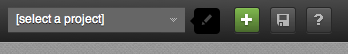
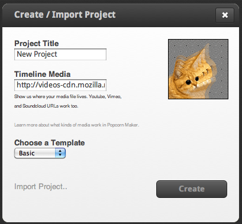
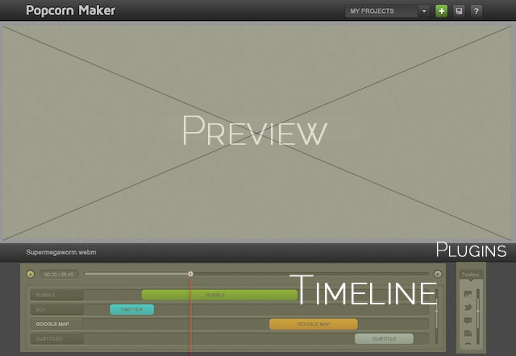
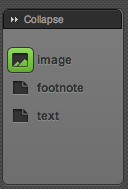
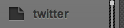
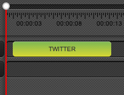
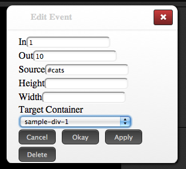
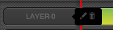
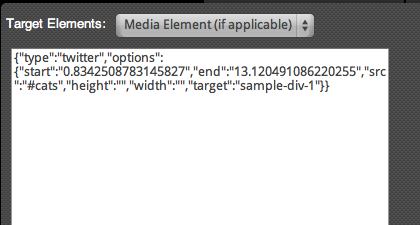
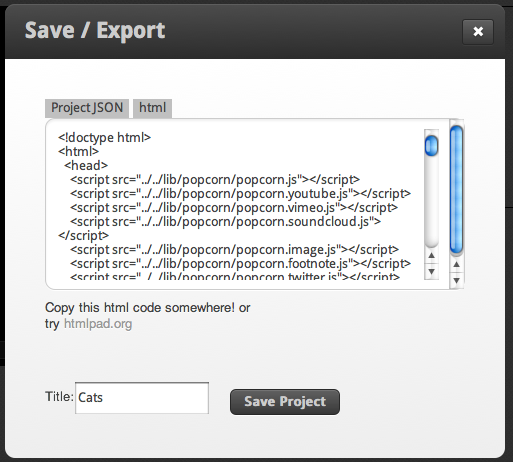

Popcorn Maker is a fun and easy way to make interactive open video pages. It's an HTML5 web app, so you can access it from any advanced browser and start creating.
Popcorn Maker is not a video editor-it's a new kind of tool that seamlessly weaves your videos into the web. With Popcorn Maker, you can make advanced, "web-native" videos without learning how to code. (Of course, if you want to be a rockstar, you should learn how to code!)
It's been tested for compatibility with newer browsers. For best results, use Firefox 8 or newer, or Chrome 10 or newer. Your finished creations should work on any browser, depending on the technologies you use.
Popcorn Maker is and will always be 100% free and open source. If you want to customize Popcorn Maker, look under the hood, or host your own instance of the app, then go for it! The source code is available here.
Using Popcorn Maker, you can take any kind of timeline-based web media (like video, audio, or animation) and build an interactive web page around it. Check out some examples here.
You can mix and match functionality using our built in plug-ins, for everything from live tweets, to maps, to Facebook integration, web pages, and more. It's like remixing the web. And the aesthetics of how to present your project are totally up to you.
There are many templates available for you to start from-everything from pop-up video, to book reports, to interactive news stories, and more. Check out the template gallery to see what's available. New templates are being added every day.
With a little bit of determination, you can make almost anything you can imagine in Popcorn Maker. If you don't find a template that meets your needs, you can make your own. It's easy—just like designing a regular web page with HTML and CSS. Read more about making your own templates. We hope you'll share!
To create a project, click the green "+" sign in the top right corner of the app.
The "Create/Import Project" dialog will open:
1. Give your project a title. You can change this later.
2. Then, enter your timeline media. When you press "play" on your Popcorn Maker project, this is the media that will start. You have a few options:
3. Finally, choose a template for your project. The template provides a visual layout and is usually designed for a specific kind of project. You can see the available templates here.
You can also load your own, custom template by selecting "Other."
You can't change your template after you've started a project, so choose carefully.
When you click "create," your project will be created, and you'll enter the editor view.
There are 4 regions in the Popcorn Maker app. We'll go into detail on each one, but here's an overview:
Preview area - With Popcorn Maker, What You See Is What You Get ("WYSIWYG"). So when you're in the editor view, you're seeing the project as it will be experienced by your viewers.
(You can also hide the timeline and plug-ins tray by clicking the hide tab:)
Timeline tray - this is a representation of your timeline media. You can add events along this timeline by dragging from the plugins tray.
Plugins tray - this is a list of available plug-ins. Each plug-in will allow you to add some functionality to your project.
Menu bar - From the menu bar, you can create a new project, save or export the current project, load a saved project, or get help.
So you've created a Popcorn Maker project. Let's start adding events to your timeline.
Let's say you have a video about a cat, and want to queue #cats tweets between 1 and 10 seconds.
1. Find the Twitter plugin:
2. Drag your chosen plugin into the timeline. You can adjust the timing of the event by moving it along the timeline, or extend the length of the event by dragging from the edges.
3. Double click on an event to edit it. Here's an example of a event editor dialogue:
Each plugin has its own editor dialogue, based on the functionality of that plugin. In this example, we're configuring the Twitter plugin to check for #cats tweets.
4. Lastly, make sure your event is assigned to a "Target Container." A target container is a region in the page where your event will take place. Each template has its own target containers-you can experiment with your template to see what works best.
So, we've chosen a plugin (Twitter), added it as an event to the timeline (between 1 and 10 seconds), and assigned a target container ("sample-div-1.")
Result: When you play the timeline media, a Twitter widget will appear between 1 and 10 seconds displaying the latest #cats tweets.
Because there are many plugins and templates, there are infinite variations and possibilities. No two Popcorn Maker projects will be the same. But the authoring pattern is always the same: choose a plugin, add it to the timeline, and configure the event.
Note: this part of the app is in active development. Documentation may be out of date.
A Popcorn Maker project can have an infinite number of tracks.
Tracks help you, the creator, organize events in the way that seems most logical to you. Maybe you want one track to visualize all the Twitter events. Or maybe you want one track to visualize all the cat-related events. It's up to you.
When you mouse over the name of a track, you'll see options to edit or delete the track:
In the track editor, you can see the code for the events that you've assigned to the track. If you like, you can directly edit the code here. And you can copy and paste code across tracks-this is helpful if you're working on multiple versions of a project.
Lastly, you can override the Target Container for all events on the track. This will make it so all events on the track with take place in the same region of the page.
But be careful: if you don't know what you're doing, you could mess up your project.
First off-don't forget to save your projects constantly! Future versions of the app will offer autosave and even cloud storage of your projects, but for now you're responsible for saving your work.
To save your progress, click the save icon in the menubar:
That will queue up the Save/Export Dialog:
Then click the save button.
From here, you can also grab the code that makes your project work. Popcorn Maker projects are 100% HTML, CSS, and Javascript-open web technologies that are human readable and easily hackable.
You can grab this code and host it anywhere on the web.
Future versions of the app will offer one-click download for all project files, so you can easily host yourself; embedding; and even one-click hosting. But for now, you need to manually grab the code for your project and re-publish it.
Popcorn Maker supports many forms of timeline media: YouTube, Vimeo, Soundcloud, and HTML5 media.
But Popcorn Maker works best with HTML5 media. That's because there are a ton of things that you just can't do with Flash media, like piping video through WebGL, exposing raw audio data, and other advanced browser capabilities.
As Popcorn Maker matures, it will begin to offer plugins that only work with HTML5 media.
To future proof your projects, make sure you're using HTML5 media. And to ensure that your HTML5 media work in any browser, you should offer multiple source files (though the app doesn't yet support alternate timeline media, so you'll have to do this manually by editing the final project code).
For video: offer WebM and H264 encoded versions.
For audio: offer Theora and MP3 encoded versions.
If you're having trouble loading a particular kind of timeline media, make sure your browser supports it. Safari won't load WebM media, for instance.
The best part about Popcorn Maker is that it uses no proprietary or new technologies. It's 100 percent HTML, CSS, and Javascript.
So, if you're a web designer, you can design template and plugin combinations to create any kind of authoring environment you might want. The sky is the limit.
To get started, write your web page or web app using any combination of technologies. Add any necessary JavaScript—including custom Popcorn plugins, if desired. If you don't include a version of popcorn.js core, we'll include it for you.
Then, turn it into a Popcorn Maker template using simple markup:
Give the DOM element that will host the timeline media the [ data-butter="media" ] attribute. Example:
<div data-butter="media" id="outerVideo" width="300" height="200" controls>
For any page region that will be affected Popcorn events, give the DOM element the [ data-butter="target" ] attribute. Example:
<div data-butter="target" id="leftBox"></div>
By marking up web pages with these two attributes, anyone who knows HTML can make simple templates. And if you want to get more advanced, you can write custom Popcorn plugins with custom editor dialogues.
Using a combination of template design and plugin design, you can create any kind of authoring environment you like.
As with other open source communities-like WordPress.org-we hope that the pool of available templates and plugins will grow deeper and more advanced with time. We hope that you'll share your creations so others can build off of your code. Read more about sharing templates and plugins.